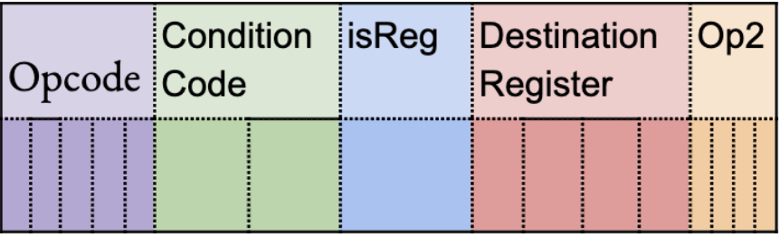

Project Description

A description of the project as a whole, including details on the implementation of the instruction set, assembler, design, and test cases.
Virtual five-stage processor for a 16-bit instruction set.
This virtual processor was written in Verilog throughout the course of a semester of the University of Kentucky's EE-480 Computer Architecture course.
The 16-bit instruction set can be assembled using AIK.
The processor is pipelined into 5 stages so each instruction begins processing as soon as the previous one moves on from its previous stage, unless a dependency halt is neeeded.
Runs on a shell or on Icarus Verilog or through the Icarus Verilog Simulator CGI Interface.
The floating-point arithmetic logic unit can process the basic mathematical operations and float to int conversions
A description of the project as a whole, including details on the implementation of the instruction set, assembler, design, and test cases.
Assembler written for the instruction set
Pipelined processing so that previous instruction doesn't have to wait for previous one to reach end of cycle unless there are dependencies involved
Can process conditional statements, jumps, loops, and floating point arithmetic operations
Each stage can be processed within one clock cycle
Can run on Icarus Verilog or on a shell using the iverilog command
Tests include a FizzBuzz sample
Creating an assembler
Translating instructions into bits
Designing a pipelined processor structure
Handling dependencies within a pipelined architecture
Using Verilog to implement a processor design
Using a 2-bit conditional code to implement if/else statements
Debugging using register output
Using a shell to create a test bench
Professor Hank Dietz was incredible at explaining the concepts required for this project, as well as providing us with the tools required to implement it, including AIK, the Icarus Verilog CGI Interface, the idea for the Instruction Set, and a sample architecture for the MultiCycle design.
Thomas Barber helped with the Single Cycle Processor Stage. He helped refine the assembly code and create the structure for the single cycle design. He also wrote the code for half of the instruction codes.
Josh Carroll and Lukas Dziatkowski helped work on the Multicycle Stage. Josh was instrumental in developing the test cases and Lukas did an awesome job designing and writing the Developers' Notes.